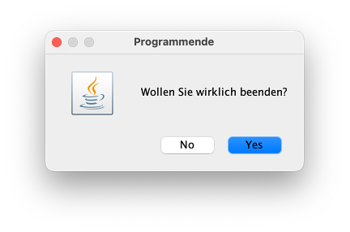
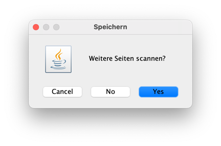
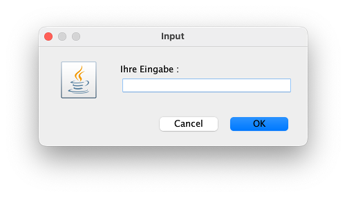
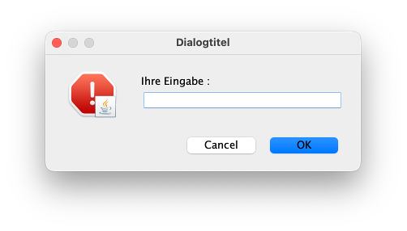

Einstieg¶
Wir haben bis jetzt noch keine Nutzerinnen-Eingaben ermöglicht und verwaltet. Das wollen wir nun ändern. Es gibt die Möglichkeit, Nutzerinnen-Eingaben über die Konsole zu implementieren. Dazu steht z.B. die Klasse Scanner aus dem java.util-Paket zur Verfügung. Diese Klasse wollen wir hier aber nicht betrachten, sondern öffnen einen Dialog (ein Fenster), um Eingaben vorzunehmen. Dazu verwenden wir die Klasse JOptionPane.
Diese Klasse bietet einige nützliche statische Methoden, die uns Dialoge erzeugen. Die Klasse JOptionPane befindet sich im Paket javax.swing. Wenn Sie in Ihrem Java-Projekt eine Datei module-info.java haben, dann müssen Sie darin requires java.desktop; eintragen, um überhaupt Klassen aus dem javax.swing-Paket importieren zu können, das sich das Paket javax.swing im Modul java.desktop befindet:
Die interessanten Methoden zur Erzeugung der Dialoge sind
showConfirmDialog(),showInputDialog(),showMessageDialog()undshowOptionDialog()
Diese Methoden erzeugen jeweils ein Dialogfenster, in dem entweder etwas eingegeben werden kann (showInputDialog()) oder in dem etwas durch den Klick auf einen Button ausgewählt werden kann. Der Eingabe-Dialog gibt einen String zurück und die anderen Dialoge geben ein int zurück, welcher beschreibt, auf welchen Button geklickt wurde. Der zurückgegebene int-Wert lässt sich mit den folgenden Konstanten vergleichen:
JOptionPane.YES_OPTION,JOptionPane.NO_OPTION,JOptionPane.CANCEL_OPTION,JOptionPane.OK_OPTION,JOptionPane.CLOSED_OPTION
Beispiel showConfirmDialog()¶
Die showConfirmDialog()-Methode ist zwei Mal überladen. Es gibt
static int showConfirmDialog(Component parentComponent, Object message)undstatic int showConfirmDialog(Component parentComponent, Object message, String title, int optionType)
Als optionType gibt es dabei die Auswahl zwischen
JOptionPane.DEFAULT_OPTION,JOptionPane.YES_NO_OPTION,JOptionPane.YES_NO_CANCEL_OPTION,JOptionPane.OK_CANCEL_OPTION
Die parentComponent ist das Fenster, welches das Dialogfenster aufruft. Wir haben ein solches Fenster (noch) nicht, deshalb werden wir zunächst den Wert hier stets auf null setzen.
Der String message erscheint im Dialogfenster als Nachricht. Da dies nicht nur ein String sein kann, sondern besipielsweise auch ein Icon, ist der Typ von message als Object deklariert.
Der String title erscheint als Titel des Dialogfensters.
Beispiel mit YES_NO_OPTION¶
int auswahl = JOptionPane.showConfirmDialog(
null, // parentComponent
"Wollen Sie wirklich beenden?", // message
"Programmende", // title
JOptionPane.YES_NO_OPTION // optionType
);
erzeugt z.B. folgendes Dialogfenster:

Wenn Sie nun auf einen der beiden Button No oder Yes klicken, dann schließt sich das Fenster wieder und in dem int auswahl ist der Wert gespeichert, der dem von Ihnen gedrückten Button entspricht. Diesen Wert können Sie wie folgt auswerten:
if(auswahl == JOptionPane.NO_OPTION)
{
// es wurde auf NO geklickt
}
else if(auswahl == JOptionPane.YES_OPTION)
{
// es wurde auf YES geklickt
}
Beispiel mit YES_NO_CANCEL_OPTION¶
int auswahl = JOptionPane.showConfirmDialog(null, "Weitere Seiten scannen?", "Speichern", JOptionPane.YES_NO_CANCEL_OPTION);
if(auswahl == JOptionPane.NO_OPTION)
{
// es wurde auf NO geklickt
}
else if(auswahl == JOptionPane.YES_OPTION)
{
// es wurde auf YES geklickt
}
else if(auswahl == JOptionPane.CANCEL_OPTION)
{
// es wurde auf CANCEL geklickt
}
erzeugt folgendes Dialogfenster:

Beispiel showInputDialog()¶
Die Methode showInputDialog() öffnet ein Dialogfenster mit einem einzeiligen Textfeld, in das die Nutzerin etwas eingeben kann und diese Eingabe dann mit dem Klick auf einen Button beendet. Die Methode showInputDialog() ist sechs Mal überladen, siehe dazu [hier]. Uns interessiert in den meisten Fällen die einfachste Form showInputDialog(Object message) oder, wenn wir noch einen messageType hinzufügen wollen, showInputDialog(Component parentComponent, Object message, String title, int messageType).
Für den messageType gibt es folgende vordefinierte Konstanten:
ERROR_MESSAGE,INFORMATION_MESSAGE,WARNING_MESSAGE,QUESTION_MESSAGE,PLAIN_MESSAGE
Wichtig ist, dass die showInputDialog()-Methode den String zurückgibt, der eingegeben wurde.
String eingabe = JOptionPane.showInputDialog("Ihre Eingabe : ");
System.out.println("Sie haben " + eingabe + " eingegeben");
erzeugt folgendes Dialogfenster:

Die Implementierung
String eingabe = JOptionPane.showInputDialog(null, "Ihre Eingabe : ", "Dialogtitel", JOptionPane.ERROR_MESSAGE);
System.out.println("Sie haben " + eingabe + " eingegeben");
erzeugt folgendes Dialogfenster:

Die Ansicht der Fenster und auch der messageType-Icons sind betriebssystemabhängig.
Ausblick¶
Angenommen, wir wollen JOptionPane.showInputDialog() verwenden, um eine Zahl einzugeben. Klar ist, dass showInputDialog() die Eingabe als String zurückgibt.
-
Problem: Wie wandeln wir einen
Stringzu einemint(oderdouble) um?Antwort: mit der Hilfe von Wrapper-Klassen
-
Problem: Angenommen, wir haben eine Lösung,
Stringnachintumzuwandeln. Wie stellen wir dann sicher, dass unser Programm nicht abstürzt, wenn wir gar keine Zahl eingeben, sondern z.B.hallo? Das lässt sich ja gar nicht in eine Zahl umwandeln.Antwort: mit der Behandlung von Exceptions